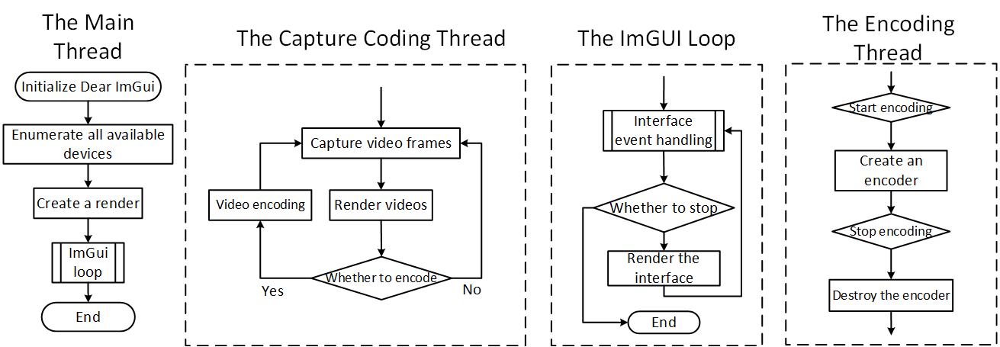
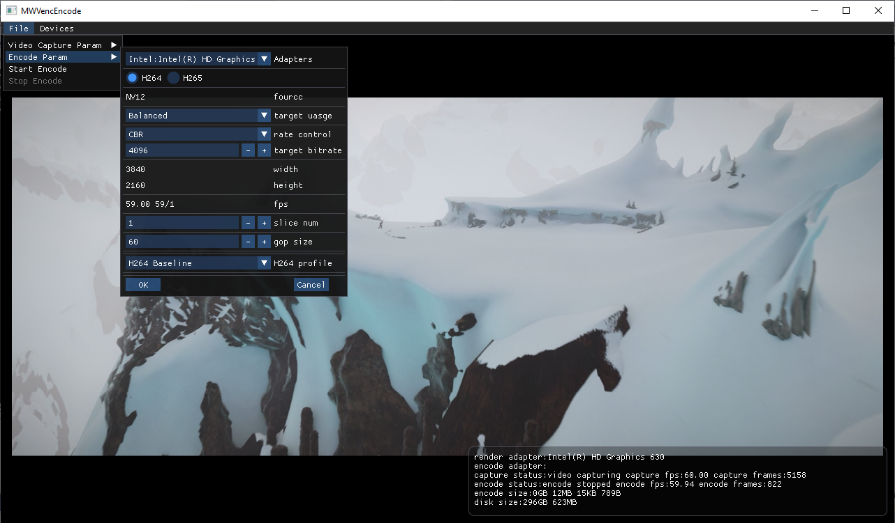
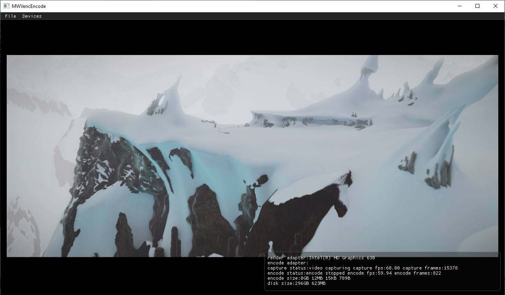

The key features are as follows:
-
capturing and rendering videos using APIs in Universal Functions, Pro Capture Family Functions and Eco Capture Family Functions.
-
hardware coding the captured data using APIs in Hardware Encoder Module Functions.
-
support for H264 and H265 encoding based on Nvidia, Intel, AMD hardware.
-
writing the encoded content into a file which can be played via ffplay.
Folder dir: SDKv3\Examples\VC++\GUI\MWVencEncode
Supported Hardware
Pro Capture Family, Eco Capture Family, and USB Capture Family
Feature
-
Preview captured video.
-
The captured data is encoded as H264 or H265, and written as a file through hardware coding.
-
Switch capture channel.
Calling logic
The main thread:
-
Initialize Dear ImGui.
-
To initialize and enumerate all available devices, , call: MWCaptureInitInstance, MWGetChannelCount
-
To create video renderer, call: CMWOpenGLRender
-
Enter the main thread loop.
-
Click the Close button, and exit the application.
Video capture thread
1. Pro Capture Family
-
To start video capture, call: MWStartVideoCapture.
-
To register a timer notification, call: MWRegisterTimer.
-
To Set the timer to trigger one frame of video data capturing, call: MWScheduleTimer, MWCaptureVideoFrameToVirtualAddressEx.
-
To get the current capture status and release the capture card resources, call:: MWGetVideoCaptureStatus.
-
To process captured video data, call: OnCaptureCallback.
-
To close the current active channel and change to preview the new signal, call: OnVideoSignalChanged.
-
Repeat step 3 to 6, until the thread quits.
-
To quit thread and clear resources, call: MWUnregisterNotify, MWUnregisterTimer
2. Eco Capture Family
-
To start video capture, call: MWStartVideoEcoCapture.
-
To set video data storage space, call: MWCaptureSetVideoEcoFrame.
-
To one frame of video data, call: MWGetVideoEcoCaptureStatus.
-
To render captured video data, call: OnCaptureCallback.
-
To reset the frame storage space, call: MWCaptureSetVideoEcoFrame.
-
To close the current active channel and change to preview the new signal, call: OnVideoSignalChanged.
-
Repeat step 3 to 6, until the thread quits.
-
To quit thread and clear resources, call: MWUnregisterNotify, MWStopVideoEcoCapture
3. USB Capture Family
-
To start video capture, call: MWCreateVideoCapture
-
To stop capture, call: MWDestoryVideoCapture
Video encoding
-
To create a renderer, call: mw_venc_create_by_index
-
To import data to be encoded, call: mw_venc_put_frame
-
Callback to get the encoded data.
-
To destory encoders, call: mw_venc_destory
Flow chart

Figure 1 MWVencEncode
Result

Figure 2 MWVencEncode Preview

Figure 3 MWVencEncode Encode